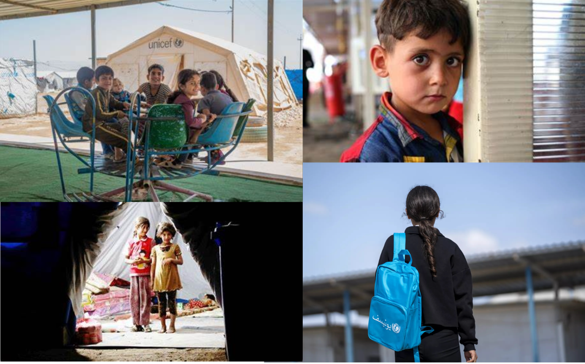

3. Life Expectancy (Bar Chart)
The dashboard then narrows its focus to the top 10 countries with the highest average percentage of children suffering from at least one deprivation, presenting a bar chart of their average life expectancy.
This visualisation starkly illustrates the long-term impacts of child deprivation on health and longevity, offering a sobering reminder of the stakes involved.

4. Population Increase (Line Chart)
Complementing the bar chart is a line chart showcasing the population increase in these top 10 countries.
This chart provides insights into how growing populations may exacerbate the challenges of addressing child deprivations, highlighting the urgent need for scalable solutions.
